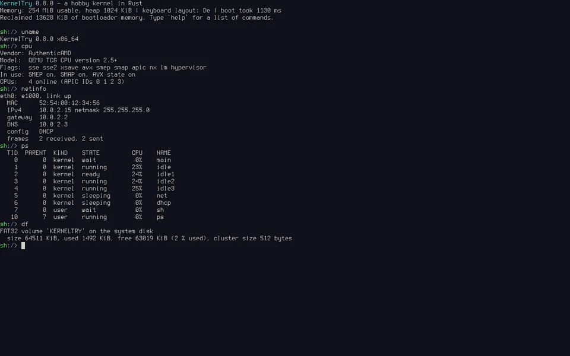

uname, cpu, netinfo, ps and df.What it is
YAK is a small x86-64 operating system written from scratch in Rust. It's made for learning how a kernel works: by reading it, running it, testing it and changing it. It runs in QEMU, with BIOS and UEFI.
Everything is our own code. The only crates are limine (boot protocol) and spin (locks).
YAK is a hobby and learning project. It is not a Linux replacement, not POSIX-compatible, not a desktop system and not a driver collection for real hardware. Next comes a course: a chapter-by-chapter walk through the kernel on its own website.
What's in it
| Area | What YAK does |
|---|---|
| Boot | Limine boot protocol, BIOS and UEFI, higher-half kernel |
| CPU | Own GDT/TSS/IDT, local APIC and I/O APIC, every core from the ACPI MADT started via INIT/SIPI, SMEP/SMAP, x87/SSE/AVX state per thread |
| Memory | Bitmap frame allocator, 4-level paging, guarded kernel stacks, kernel heap, demand-paged user heaps and stacks |
| Scheduling | Preemptive round-robin SMP scheduler, kernel and user threads, futexes, sleeping mutexes |
| Processes | Ring 3, one address space per process, ELF loader, 53 syscalls, signals, pipes, environment variables |
| Storage | PCI, AHCI SATA driver with MSI, sector cache, FAT32 with long file names – persistent across reboots |
| Network | e1000, Ethernet/ARP/IPv4/ICMP/UDP/TCP, DHCP, DNS client, wget and httpd |
| User space | /bin/sh with pipes, redirection, scripts, if/while/for/case, functions, $(...) and jobs; a full-screen editor and 37 more programs |
Try it
You don't need to build anything. Every release from 1.0 on has ready-made files on the download page: the ISO (kernel and bootloader, boots with BIOS and UEFI), the FAT32 disk image with /bin and sample files, the start script run-yak.sh and SHA256SUMS.
Put the files of one release into a folder, install QEMU (package qemu-system-x86 on Fedora, Debian and Ubuntu), then run:
sha256sum -c SHA256SUMS # the files arrived intact ./run-yak.sh # QEMU window; the serial console is in this terminal ./run-yak.sh --headless # no window (Ctrl+A X quits QEMU) ./run-yak.sh --uefi /usr/share/OVMF/OVMF_CODE_4M.fd # through UEFI
On Fedora the UEFI firmware is at /usr/share/edk2/ovmf/OVMF_CODE.fd. The disk image is unpacked on the first start and keeps what you write to it. Delete yak-1.0.0-disk.img to start fresh.
Things to try in the shell: help, ls /bin, cat /README.txt | wc, ps, cpu, ping 10.0.2.2, edit notes.txt.
The keyboard layout is German (QWERTZ) by default.
Build it yourself
To change YAK you need the source. Rust comes from rustup; the exact nightly compiler is pinned in rust-toolchain.toml. You also need QEMU, xorriso, dosfstools, mtools, make, gcc, binutils, git and python3 (and OVMF for UEFI).
git clone https://github.com/FreakySneaky787/yak-kernel.git cd yak-kernel rustup toolchain install # reads rust-toolchain.toml make deps # checks the host tools make run # build everything and boot in QEMU make check # all tests
The first build downloads the Limine binaries into vendor/limine.
Supported environment
YAK runs in QEMU only. “Supported” means make check passes there, locally and in CI on every push.
| Supported (tested) | Not supported / untested | |
|---|---|---|
| Emulator | QEMU, machine q35, TCG (no KVM needed) | KVM, other emulators, real hardware |
| Firmware | BIOS (SeaBIOS) and UEFI (OVMF) | |
| CPU | 1 to 4 cores, CPU models max and qemu64 | More than 4 cores |
| RAM | 256 MiB (default); BIOS works down to 24 MiB, UEFI needs 160 MiB | |
| Devices | AHCI SATA disk with FAT32, e1000, PS/2 keyboard, COM1, framebuffer | USB, NVMe, virtio, other network cards |
| Host | Linux: Ubuntu 24.04 and Fedora | macOS, Windows |
Documentation
The whole documentation is on its own website as a book with navigation and search: freakysneaky787.github.io/yak-kernel.
- Walkthrough – start here: four tours through the code (boot, a key press, a pipeline, a page fault)
- Experiments – change one thing, predict what happens, observe
- Hacking – how to add a syscall, a program, a test or a shell built-in
- Learn – short explanations of every subsystem, in the order they were built
- Design – the architecture and the reasons behind each decision
- Bugs – every bug found so far: symptom, cause, fix and test
Tests
make testruns unit tests and integration test kernels headless in QEMU.make e2eandmake e2e-uefiboot the real system and type commands into the shell over the serial port.syscheckthrows bad pointers, lengths, descriptors and random syscalls at the kernel.- CI runs
make checkon fresh Ubuntu and Fedora machines for every push and pull request. make stressruns everything many times. It's the release gate and takes about 30 minutes.
License
YAK is free software under the GNU General Public License, version 3 or later (GPL-3.0-or-later). Anyone may use, study, change and share it; whoever distributes it or a changed version must pass on the source code under the same license.
The bundled Terminus font keeps its SIL Open Font License, and the Limine bootloader keeps its own license.